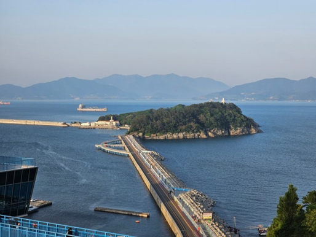

오동도
오동도는 전라남도 여수시 오동도로222에 위치해 있는 섬이다. 또한 오동도는 앞바다 남동쪽 1km 지점에 있는 면적 0.13km² 정도의 섬으로, 한려해상 국립공원에 속해 있으며, 동백꽃과 대나무가 우거져 있어 여수시민의 휴식처이다.
위치 : 전라남도 여수시 오동도로 222
아쿠아플라넷
큰 물고기와 상어 탱크가 있는 수족관으로 벨루가 고래 쇼, 먹이주기 시연, 터치풀을 즐길 수 있습니다.
위치 : 전라남도 여수시 오동도로 61-11